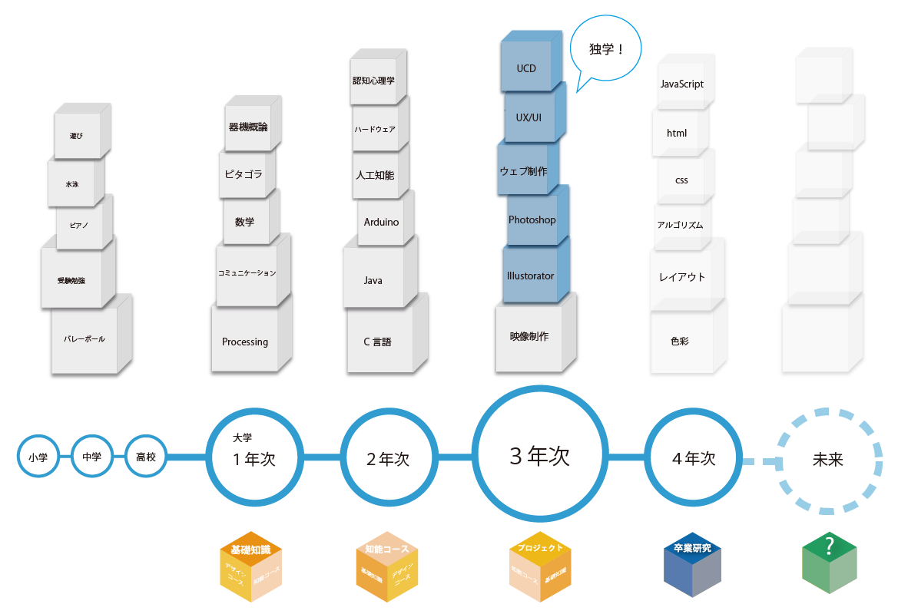

Profile
スガサキ アオイ菅崎 葵
1993年6月1日生まれ
茨城県出身
公立はこだて未来大学
専攻は人工知能をベースとする複雑分野。 主にシステム内部やロボットセンサの開発について学ぶ。
軽音学部、バレーボール部に所属
趣味は美味しい居酒屋巡り
好きな食べ物はお寿司と梅干し

わたしが積み上げてきたモノ
この図は主に大学で取り組んできた事です。学年を重ねるたびに、出来る事や知識が増えていきました。特に３年次には、独学でPhotoshopやIllustoratorなどデザイン分野の勉強にも取り組んできました。
